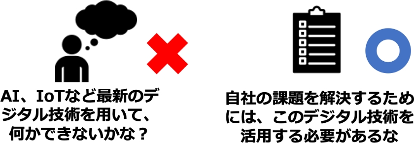
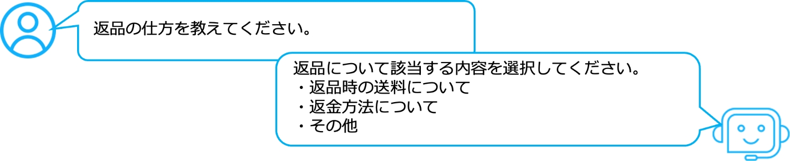

4-2-5. 次世代技術を活用したビジネス展開
デジタルトランスフォーメーションを推進していく際、ただ単にデジタル技術を導入すれば良いというわけではありません。自社の実現したいこと（将来のビジョン）から、実現に必要な課題を明確にし、その課題を解決するためにデジタル技術の活用が求められます。現在は、AI、IoTなど新しいデジタル技術が多くあります。
以下では、主なデジタル技術を紹介します。次に、デジタル技術を活用して自社の課題を解決してもらうための参考情報として、既にデジタルトランスフォーメーションを実践している企業の事例を紹介します。
デジタル技術は手段であり、導入自体が目的ではない
項目
概要
活用方法例
AI
AIは、膨大な情報を処理し、判断や予測を行うことができます。
- 需要の予測や在庫の最適化
- 不良品の自動検出
- 対話型AIによる、問い合わせ対応の自動化。近年、学習したデータを元に新しいコンテンツを生成できるAIの登場により、複雑な問い合わせにも対応可能
IoT
現実世界の様々なモノが、インターネットと繋がることです。収集したデータが、インターネットに送信・蓄積され、データを分析・活用することで、新たな価値の創出に繋がります。
- 生産設備にセンサーを設置し、振動データを取得し分析することで、部品の故障予知や性能維持が可能
- 生産設備の稼働状況を可視化したことで、すべての拠点での生産状況をリアルタイムに把握可能
クラウドサービス
自社で機器やシステムを保有しなくても、インターネット経由で、様々なサービスを利用できます。
- 社内情報の一元管理、情報共有の利便性向上
- システムを開発・実行するためのツールや環境構築の作業の省略
- 場所やデバイスに依存せずに作業の継続が可能。リモートワーカーや複数拠点のチームとの協業がしやすくなる
実際にデジタル技術を活用して課題解決、競争力の強化を実践していく際の参考として、既にDXを実践している企業が自社の課題に対して、どのようにデジタル技術を活用して解決し、競争力を強化しているのか紹介します。
事例1：ユニット型制御基板製造企業（愛媛県・製造業）
課題
システム開発において、設計時に仕様変更がかなり多く、適切な情報共有ができないため、製造工程のやり直しや製品の品質低下の恐れがあること。
解決への取組
社内SNSとしての機能を備え、情報共有がしやすく、簡単にシステムを構築できるクラウドサービスを導入しました。それにより、システムを短期間で開発することが可能となり、業務の変化に応じて修正を即座に反映できるようになりました。その結果、情報の共有、工程管理の効率化を実現しました。さらに、この一連の経験を同じ地域の製造業者に共有するために、他の企業と協力してワークショップを開催しました。その結果、ある企業から、効率化システムのコンサルティング、開発の依頼を受注することができました。これらの経験を生かし、地域のDX推進事業をビジネスとすることを目指しています。
（出典）経済産業省 「DX Selection 2022」を基に作成
事例2：マッシュルーム生産販売業（山形県・農業、販売業）
課題
「つくる力」と「とどける力」を将来にわたってさらに強化するために、管理面の強化を行うこと。
解決への取組
作業の安全性や生産性の向上、栽培作業の平準化を目的に栽培ハウスの温湿度やCo2などの栽培環境の点検作業をIoTを用いて自動化することにしました。IoT導入にあたり、電子機械に詳しい人材を確保し、機器の設置や保守、従業員へのIoTに関する知識の向上や理解を深める指導を行いました。また、システムの使い方を担当者に熟知してもらうために、IoT機器を設置するだけでなく、どのように活用するかの検証やマニュアルづくりを、実際に現場で作業する人員と一体となって進めました。結果、栽培ハウスの点検システムの自動化により、リアルタイムで栽培ハウスのデータを把握でき、勘と経験に頼らない栽培作業の平準化が可能になりました。また、測定で得られたデータをAIを用いて分析することで、最適な栽培条件を絞り込み、マッシュルームの品質向上、栽培作業の平準化、生産量の増大が期待できるようになりました。
（出典）経済産業省 「DX Selection 2023」を基に作成
チャットボット
チャットボットとは自動会話プログラムのことです。自動で発信・返答を行うプログラムであるボットは、事前に設定したルール、選択肢などに基づいて、文字形式で利用者とコミュニケーションをとることができます。たとえば、よくある質問などを設定しておくことで、お問い合わせ対応を自動で行うことができます。そしてチャットボットでは対応できない内容のみオペレータに対応させることで、人的費用を削減することができます。
予想・今後の発展
近年、AIを搭載したチャットボットが登場しています。これまでのチャットボットとは異なり、蓄積されたデータを学習するため、決められた内容や選択肢に限定されず他の質問にも対応できたり、ユーザからの質問に表現の揺らぎがあった場合でも、一定程度対応できたり、さらには複雑な質問にも回答できるようになっています。
生成AIの登場
生成AIとは、様々なコンテンツを生成することができるAIのことです。従来のAIが主にデータを分析・学習し、その結果に基づいて予測を行うのに対して、生成AIは新たなコンテンツの創造を目的として学習します。生成AIは学習量が多いため、回答の精度や質が従来のものより高く、またコンテンツの生成速度も非常に速いという特徴があります。従来のチャットボットは主にオペレータ業務のサポートなど、お問い合わせ対応に限定されていましたが、生成AIでは以下のような活用ができることが期待されています。

生成AIの活用事例
文章生成
商品やサービスの広告文を作成する際に、商品の特徴やターゲット顧客の特性などを入力するだけで、瞬時に文章を生成することができます。
レポート作成
大量のデータを分析し、要約やレポートを自動的に生成することができます。これにより、データの処理時間を短縮し、意思決定に役立つ情報を迅速に提供することができます。
製品開発と設計
顧客ニーズや市場のトレンド、予算、顧客の意見などの情報を分析させることにより、新製品やサービスのアイデアを効率的に提案することが期待されています。